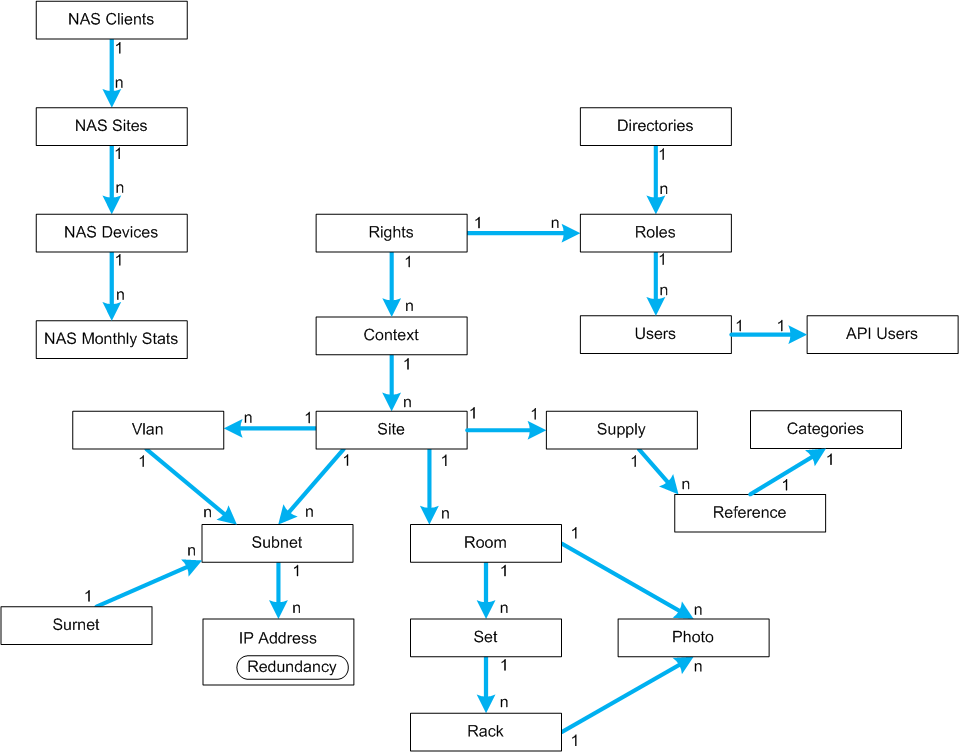

Objects Hierarchy
Object hierarchy is summarized below :
- A context contains many sites
- A site contains many subnets, vlans, romms and supply sites
- A supply site contains many references
- A subnet contains many IP addresses, some of them are redundancy IP
- A vlan contains many subnets
- A room contains many sets and photos
- A set contains many racks
- A rack contains 1 to 4 photos
- Root surnet in Norm contains many surnet and/or subnets
- NAS : client contains many sites
- NAS : sites contains many devices
- NAS : devices owns monthly statistics
- Authentication : Local or external (LDAP) directories are defined
- Auth : directory contains many roles
- Auth : many users could be members of one role
- Auth : rigths defined association between a context and role rights for this context
- API : Some users could be authorized to use API
